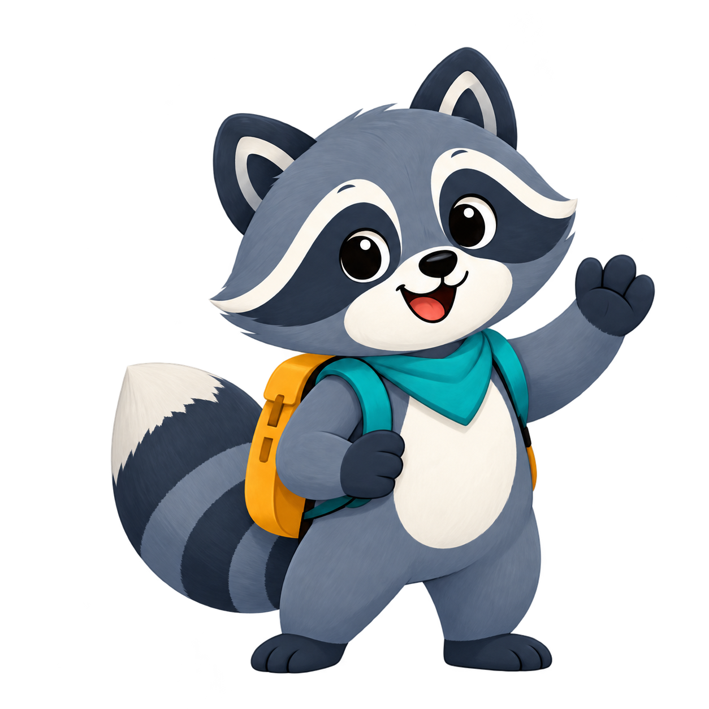
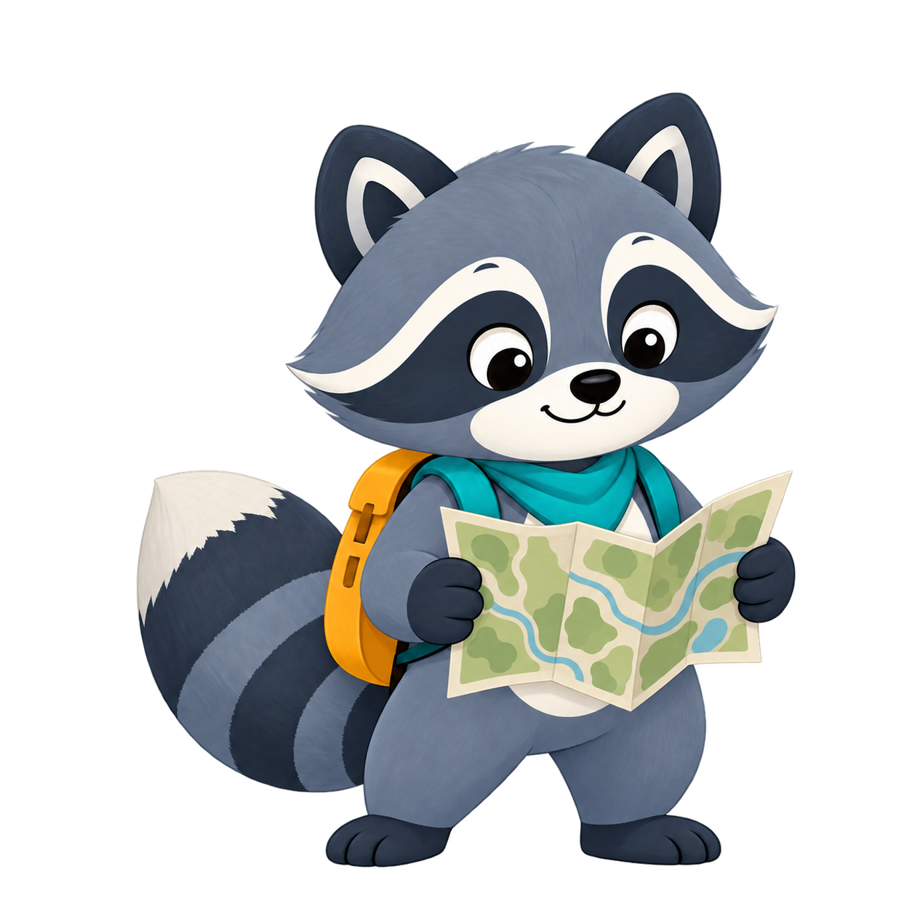
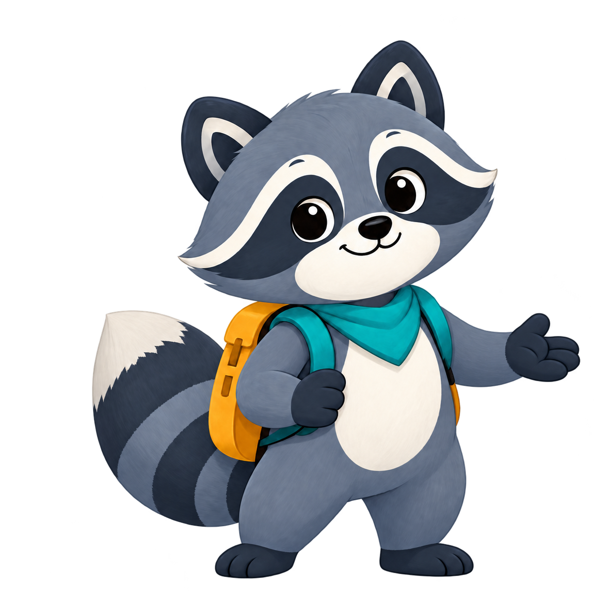
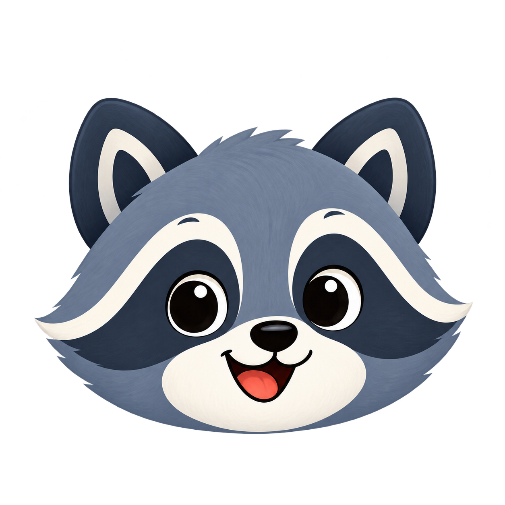

Four poses and a compact avatar. Raw transparent PNGs; this page previews assets, not the app.

Switch poses to inspect registration. Dashed line marks the approximate standing baseline. No automatic animation.



32pxCSS-pixel sizes are browser studies; device readability and SwiftUI transitions still need an in-app review.